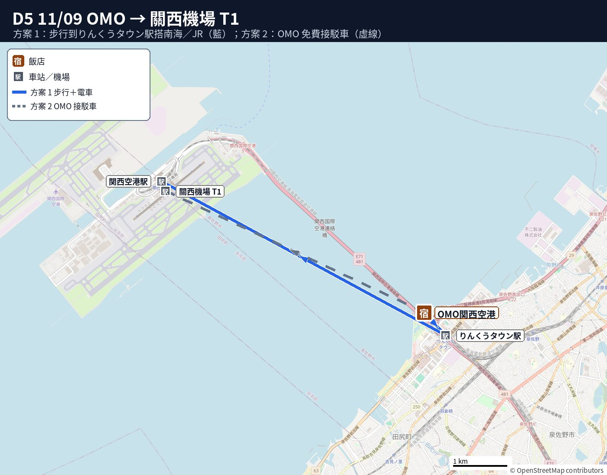

🛫 D5 11/09（一）｜臨空城 → 關西機場 → 回台北
🗺️ 本日地點檔：CSV｜KML（可匯入 Google 我的地圖）
🗓️
Day 5 重點（08:00 早餐 → 12:20 起飛）
- 流程：退房 → 步行到りんくうタウン站 → 南海 1 站到關西機場 → 先退稅 → 星宇報到託運 → 出境。
- 交通：步行＋南海（臨空城不能叫 GO 大車；要坐車就叫 2 台）。
- 周遊卡：不用。
- 交通費（5 人）：南海 ¥370×5 ＝ ¥1,850。
📑 目錄（點開）
🗺️ 今日路線圖
圖例：藍圓＝景點（數字為順序）｜橘方＝美食｜連線只表示大概方向

地圖資料 © OpenStreetMap contributors
⏱️
節奏評估：適中（早餐慢慢吃；09:00 接駁車約 10 分到 T1；退稅、報到、出境都在 12:20 起飛前做完）
- 站著、排隊：機場免稅手續機（可能要排隊）、星宇報到櫃台、安檢和出境審查。
- 可坐下休息點：OMO 早餐、接駁車上、出境後登機門附近的座位。
- 緩衝：09:00 接駁約 09:10 到 T1，櫃台 11:20 關，約 2 小時。
- 可刪減：不買免稅店，出境後直接到登機門坐著等。
- 可加碼：不建議。退稅和報到排隊可能比預期久，時間留給機場。
行程細節
✈️ 11/09（一）星宇 JX821 關西機場 T1 12:20 → 桃園 T1 14:40。目標 10:00 前到關西機場（起飛前約 2 小時 20 分）。
📍 08:00–09:10 早餐＋退房
OMO 早餐慢慢吃（6:00–10:00，LO 9:30，約 ¥2,500／人），確認退稅商品與收據都放在隨身或好拿的地方。
🚃 09:15 OMO 關西機場 → りんくうタウン站
- 路線：步行
- ⏱️ 時間：🚶 走路約 1 分（官方：りんくうタウン站 5 號出口，2F 通道直通飯店）＋ 🚃 搭車 0 分｜合計 約1–5分（含拖行李）
- 💴 車資：¥0
- 班次／替代班：—
- 提醒：行李多可請飯店叫計程車直接到機場（見下方 5 人比較表；臨空城不能叫 GO 大車）。
- 🚌 兩個去機場的做法（都先留著）：
- ① 走 1 分到りんくうタウン站 → 南海 1 站到關西機場站（¥370／人，5 人 ¥1,850）→ 走到 T1。
- ② OMO 免費接駁車（官方資訊）：只限住客；只有飯店 → 機場單程。在1F 正門前的巴士站上車，準時發車。到 T1 約 10 分、到 T2 約 20 分，塞車會晚到。一班約 20–24 人。
- 早上班次：5:00、5:45、6:00、6:30、7:00、7:30、8:00、9:00（約 9:10 到 T1）、10:00（約 10:10 到 T1）、11:00。建議坐 9:00；10:00 班可以但趕（櫃台 11:20 關）。
- 怎麼預約：搭車當天 03:00 前在官網預約；00:00 以後改到櫃台預約。check-in 時順便跟櫃台確認。
- 官網沒寫行李限制和 T1 下車點，上車前問櫃台。
- 來源：OMO 免費接駁（官方）｜交通（官方）
- 即時查詢：Google Maps
🔁 5 人怎麼走（三種比較，車資都是估計）
| 方案 | 時間 | 5 人合計 |
|---|---|---|
| 🚐 GO 大型ワゴン ×1 | — | ❌ 這區不能叫大車（泉佐野市） |
| 🚕 一般計程車 ×2（4+1） | 直接到機場約15分（估計） | 約 ¥6,000–8,000（估計，2 台） |
| 🚆 大眾運輸 | 步行1分＋南海6–10分 | 南海 ¥370×5＝¥1,850 |
💡 大眾運輸便宜很多；只有行李太多時才叫車。
🚃 09:30 りんくうタウン → 關西空港
- 路線：南海 空港急行（或 JR 關空快速），1站
- ⏱️ 時間（估計）：🚶 走路約 8 分（進站到月台 3 分＋關西機場站→T1 報到 5 分）＋ 🚃 搭車 6–10 分｜原本合計 約6–10分
- 💴 車資：南海 ¥370
- 班次／替代班：南海＋JR 合計約每10–15分一班（估計）
- 提醒：+15–20分緩衝。到站後跟「第1ターミナル」指標走到 4F 出境大廳。
- 即時查詢：Google Maps｜Jorudan｜南海 運行情報
📍 10:00–10:30 ① 退稅（託運行李之前！）
- ⏰ 時間：2026-11-01 起實施退稅新制。
- 💴 門檻：同店同日滿 ¥5,000（未稅）可退。
- 流程：先付含稅價，出境前辦理退稅。
- 🧳 行李：託運行李前至出境大廳機台辦理。
- 流程：退稅品須隨身攜帶供海關檢查。
- 規定：每人用自己護照個別辦理。
- ⚠️ 注意：同單商品若有拆封使用，整張不得退稅。
- ⏰ 提醒：免稅手續機可能排隊，請提早前往。
📍 10:30–11:00 ② 星宇 T1 報到、託運
- 位置：星宇櫃台位於 T1 4F。
- ⏰ 時間：起飛前 3 小時 09:20 開櫃。
- ⏰ 截止：起飛前 1 小時 11:20 關櫃。
- ⚠️ 注意：11:20 後無法報到，退稅與報到須先完成。
📍 11:00–12:20 ③ 出境、免稅店、登機
- ⏰ 時間：起飛前約 30 分開始登機（估計）。
📍 今日地點
🏨 住宿：OMO関西空港（出發點）
| 名稱 | 類型 | 地圖 |
|---|---|---|
| 関西国際空港 | 交通 | 開啟 |